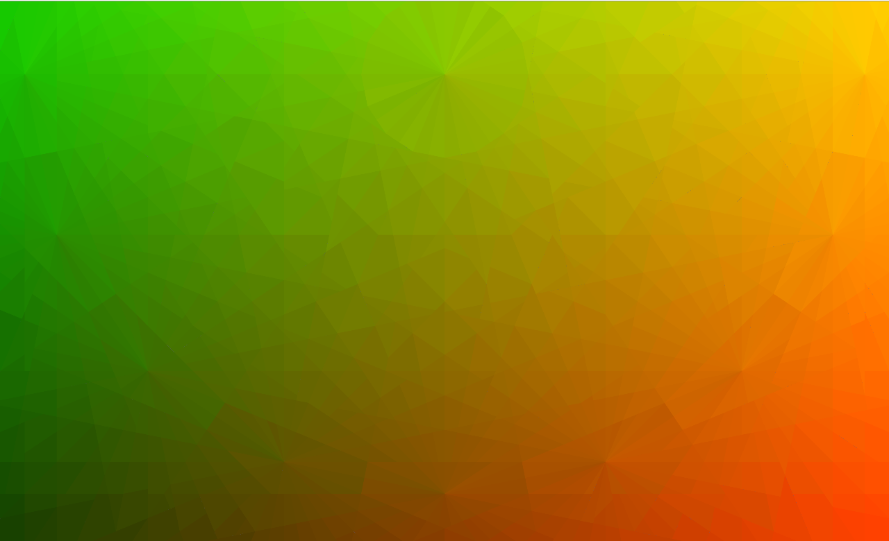
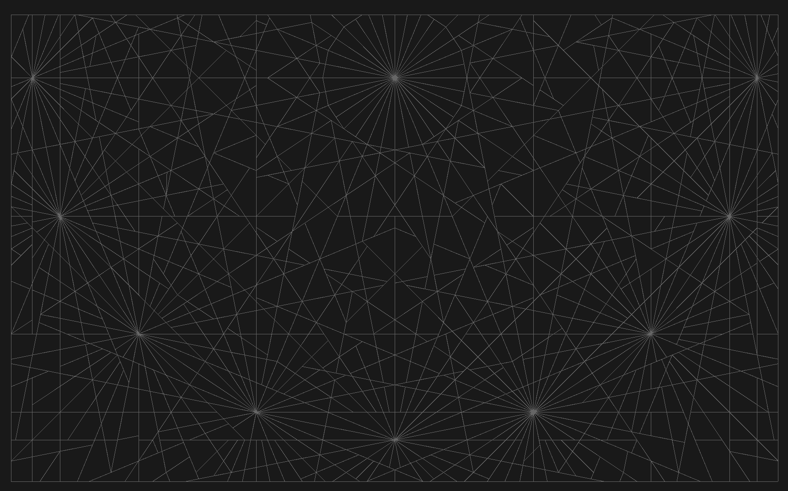
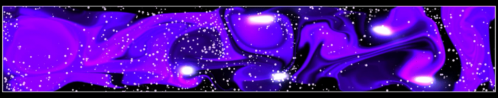
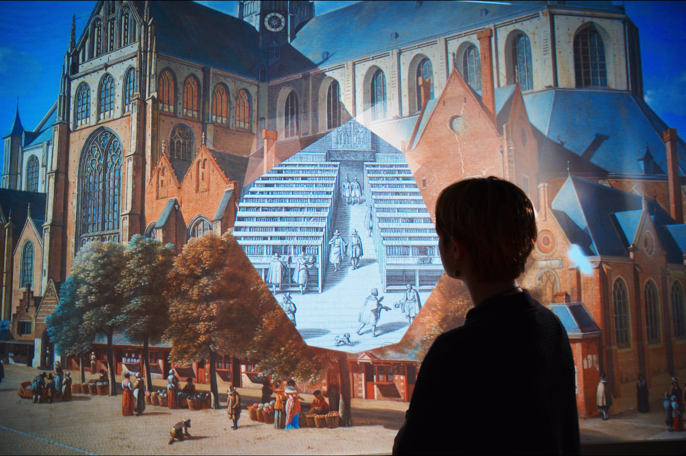

Selected Work
The Museum of Fine Arts (MFA) in Boston is known worldwide for its expansive and legendary collection of 17th-century Dutch and Flemish masterworks. As visitors enter the MFA's Netherlandish art galleries, they encounter Flow — an immersive, interactive entry experience.
The movement of museum visitors is monitored using an Intel RealSense camera from a top-down angle, with the captured data processed through a custom application developed in openFrameworks. The blob detection information is then transmitted to TouchDesigner, where it facilitates the real-time deployment of visitor-responsive visuals across the gallery floor.
Three designated points serve as interactive Call-to-Action locations, where visitors can access information about the Dutch Section artwork. As visitors approach these spots, they trigger the experience, which unfolds across three distinct scenes: Water, Hubs, and Journeys.
As visitors navigate the space, their movement induces a subtle tessellation effect on the canvas, dynamically generated by a fluid simulation. A meridian-based geometric structure was used to generate a custom UV map, applied to all dynamic animations throughout the installation.

UV Mapping System
A meridian-based geometric structure was used to generate a custom UV map representing a meridian projection. This UV map was applied to all dynamic animations, enabling precise real-time tessellation that responds to visitor movement.

Reveal Shapes
A custom tool was developed in TouchDesigner to generate reveal shapes based on the tessellated UV map, animating in and out in real time. These procedurally created shapes were combined with preloaded assets to dynamically unveil content during interaction.

